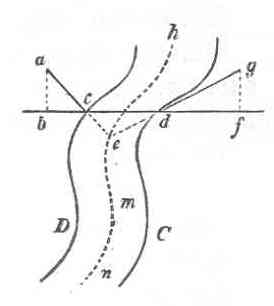

Kant: AA XIV, Physische Geographie. , Seite 549 |
|||||||
Zeile:
|
Text:
|
|
|
||||
| 01 | Diese Schlängelungen, bei welchen, so wie überhaupt in ihrem ganzen | ||||||
| 02 | Laufe, beide Ufer fast durchgängig parallel sind, gründen sich auf die | ||||||
| 03 | Gestalt des Landes zu beiden Seiten, welches meistentheils eben so gebogen | ||||||
| 04 | ist, und selbst in einiger Entfernung vom Flusse eine ähnliche Entgegensetzung | ||||||
| 05 | des Aussprungs und der Einbucht der Hügel an sich zeigt. | ||||||
| 06 | Bei dieser Gestalt ihres Rinnsals ist vornämlich |  |
|||||
| 07 | zu merken, daß jederzeit das eingebogene | ||||||
| 08 | Ufer c hoch und das ausspringende d niedrig sey. | ||||||
| 09 | Denn es sey bf die Horizontallinie, in welcher die | ||||||
| 10 | Fläche des Stromes liegt, so kann man sich vorstellen, | ||||||
| 11 | daß die Dossirungen des Wassercanals ce | ||||||
| 12 | und de eigentlich Verlängerungen des Bodens | ||||||
| 13 | ac und dg sind, und nachdem der Abhang des | ||||||
| 14 | Ufers ac steiler als der von dg ist, so werde | ||||||
| 15 | auch der tiefste Punct des Flusses dem Orte a näher seyn, als dem gleich | ||||||
| 16 | hohen Orte g des entgegen stehenden Ufers, wenn ab und gf als gleich | ||||||
| 17 | genommen werden, und zwar in dem Verhältniss von ac : dg. Wäre nun | ||||||
| 18 | das Ufer cD allenthalben steiler abgedacht, als das andere dC, oder wären | ||||||
| 19 | beide allerwärts, wo sie eins dem andern gegenüber stehen, an Höhe gleich, | ||||||
| [ Seite 548 ] [ Seite 550 ] [ Inhaltsverzeichnis ] |
|||||||
;){kind=link}